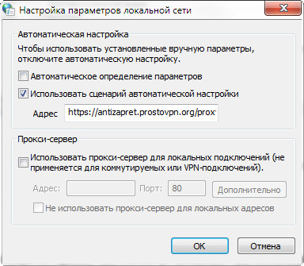

Прокси АнтиЗапрета лежит или заблокирован РКН. Не открывается ни один заблокированный сайт, даже Рутрекер. Через VPN всё работает.
Заработал, но скорость очень низкая. Сайты еле открываются.
У меня ничего не работает, пока.
Не работает прокси. что происходит?
Только что обнаружил: не открываются больше заблокированные РосКомРейхом сайты, например NNM-club. В настройках Win10, pac.сценарий указан и всё включено. Сайты не открываются в Opera, Microsoft Edge, Я.Браузер.
Но почему-то в Firefox 84.0.2 открываются. Странно.
Вчера под вечер скорость на прокси значительно просела. Предположив, что в реестр попал какой-то высокопопулярный ресурс, я откатил PAC-файл на день назад. На данный момент скорость вроде бы в норме, по крайней мере прокси-серверы откликаются за ~300 мс, как и раньше. Если у вас всё ещё не работает, попробуйте перезапустить браузер.
Работает только с IE11, хромоноги все не открывают. Флибусту например. Кеш днс и сокетов очищен.
Chrome 87.0.4280.141, Edge 87.0.664.75 — работает и там, и там.
Пришлите больше подробностей, что конкретно не работает. На https://proxy-ssl.antizapret.prostovpn.org:3143/ заходит?
Заходит. Недопустимый URL На http://seasonvar.ru/ заглушка провайдера.
Вы пробовали очищать кеш? Откройте сайт в режиме инкогнито, или хотя бы нажмите F12 → network → disable cache.
Конечно. Картинка
{kind=link}
Нажмите на элемент загрузки flibusta.is в листе этой вкладки. В меню справа должны открыться сетевые подробности, перейдите во вкладку headers, там обозначены разные данные, в т.ч. IP-адрес ресурса.
Как-то так. Пришлите такой скриншот.
{kind=link}
{kind=link}
По всей видимости, у вас не используется прокси. Он точно установлен? Вы используете глобальную настройку с PAC-файлом?

Какие-то Windows-приколы. Попробуйте перезагрузить компьютер, не знаю.
Перезагружал. Вопрос: почему в IE 11, все доступно ?
Аналогичная ситуация, кеш чистил, комп перезагружал, вылазят заглушки от провайдера:(
Да не работает примерно с 20-00 15.01.21 (по мск.). Ни на один сайт, блокированный провайдером зайти не могу. Решите пожалуйста проблему!
Попробуйте сейчас. Проблема была в слишком большом размере PAC-файла.
Воркает. Спасибо
Заработал. Спасибо!
Работает, благодарю:)
А у меня так и не заработало.
Вчера в 23 часа, перестало работать на всех браузерах(Opera, Yandex), теперь вижу заглушку от провайдера. В настройках ничего не менял, все как было и раньше. Подскажите, в чем может быть причина? Вижу, что у некоторых тоже были проблемы, но в итоге все разрешилось, а я блин, как всегда “рыжий”)))
{kind=link}
{kind=link}
https://antizapret.prostovpn.org/proxy.pac
была проблема вчера. с утра работало всё более-менее нормально. после обеда и сейчас подтормаживает заметно. включал-выключал. кэш чистил.
Все, я понял где “обосрался”)
И ведь точно, я пробовал заново вводить ссылку, но забыл про это.
Огромное спасибо!
Некоторые прокси-серверы работают медленно, с этим еще не разбирался.
Скорость работы должна быть восстановлена, проверьте.
всё отлично. спасибо
Перестал работать https://f95zone.to без дополнительного VPN, не знаете сайт сам доступ закрывает РУ региону или его зароскомнадзорили?
Ваш провайдер блокирует реестровые записи Cloudflare по IP-адресу, либо же у вас включён ESNI. Если ESNI включён — отключите его.
Обойти блокировку можно, добавив домен в hosts, указав на любой незаблокированный IP-адрес Cloudflare. Например:
104.27.201.1 f95zone.to
Спасибо большое, разобрался:)
Опять упала скорость. вчера вечером всё было хорошо.
Два сервера не выдерживают. Заменил их, и добавил еще два.
Не совсем в тему, но проблема началась тогда же, а после фикса серверов возникла проблема.
Настроен коннект на роутере (OpenWrt), использование гугловского днса и route 8.8.8.8 в конфиге ovpn. После замены “уставших” серверов ситуация следующая:
Если роутеру отдаются адреса 192.168.115.x, 192.168.114.x, 192.168.113.x (может какие-то ещё), то 8.8.8.8 перестаёт пинговаться как и положено, но и на днс запросы он не отвечает, т.е. роутер переключается на провайдерские днс.
Если же отдаются 192.168.105.x, 192.168.104.x (может какие-то ещё), то всё работает в штатном режиме.
Не знаю как оно работает на стороне антизапрета, но в случае успешной работы используются сервера 51.75.70.203 и 51.75.75.245. Куда кидает в неудачном случае я не знаю как выяснить.
Хз есть ли вообще какая-то связь между получаемой подсетью и работоспособностью днс, но пока удалось выяснить только такую закономерность.
У серверов разные конфиги и в первом случае стоковым openwrt+openvpn требуется какая-то донастройка?
Исправлено. Спасибо, что заметили.
Серверы VPN не менялись, но перенастраивались, тогда эта ошибка и появилась. Эта тема про прокси.
Опять не работает ?
У меня только что заработал.
Вроде да, заработал.
Вчера вечером были проблемы с раздачей PAC-файла, вызванные ошибкой скачивания на стороне Cloudflare. Проблема устранена перегенерированием IPFS-ссылки. Прокси-серверы оставались работоспособными всё время.
На SeaMonkey (2.53.6) вообще не работает. Пробовали?
Хотя бы рутрекер. В запросах в первой строчке - 301 Moved Permanently.
На 52 ESR, вроде, тоже.
Windows 7
Сервис работает в штатном режиме, мониторинг не сигнализирует о проблемах, все прокси-серверы работают. PAC-файл устанавливается и корректно используется в Firefox 39 на Windows XP.
Диагностируйте и устаняйте проблему на своей стороне: АнтиЗапрет — диагностика и решение проблем
Отвал. Везде заглушки провайдера.
Исправлено. Повторяющиеся сообщения, не несущие смысловую нагрузку, удалены.
Спасибо.
У меня ничего не исправилось, как с утра на некоторых сайтах появлялись заглушки от провайдера, так и появляются. Настройки все перепроверял, да и не менял ничего до этого. С браузерными VPN - расширениями заблокированные сайты работают, в том числе и рутрекер.
Без дополнительной информации могу только посоветовать выявить проблему самостоятельно, см. АнтиЗапрет — диагностика и решение проблем
На данный момент сервис работает без сбоев, я проверил и автоматически, и вручную.
Благодарю за ссылку, оказывается проблема была в установленном (но выключенным) расширении ZenMate. Удалил и всё заработало.
Провайдер подменяет DNS.
PAC-файл АнтиЗапрета должен работать и при подмене DNS: на прокси-сервер передаётся адрес домена, браузер не (всегда) резолвит заблокированные сайты через DNS провайдера.
Проблема может быть при использовании нешифрованных прокси браузером, но Firefox поддерживает шифрование.
По https работает рутрекер, а по http - нет.
Прописывание стороннего DNS в настройках соединения, вроде, не помогает.
Перестал работать https://fsa.gov.ru 01.03.2022 работало всё оке . с 02.03 с утра перестал открываться
Фаирфокс = “Хмм. Нам не удаётся найти этот сайт.”
хром пишет :DNS_PROBE_FINISHED_NXDOMAIN
Отключаю антизапрет и всё ове.
Роутер Кенетик EXTRA ДНС 8.8.8.8 10.80.80.1
NS-серверы этого домена недоступны с сервера, поэтому он не резолвится. Сделал костыль, должно работать.
Здравствуйте.
Прокси перестал работать сегодня.
Ни один из заблокированных сайтов больше не открывается.
Исправьте пожалуйста.
Спасибо.
Прокси работают в штатном режиме, проблем не наблюдается.
В конце файла https://cloudflare-ipfs.com/ipfs/QmPLm7pNadGqyq7zoYZP4FadmXkVcykT5fS2V8LDCnX3xt/proxy-ssl.js видно строку return "DIRECT";?
Не видно… Туннель warp в wireguard также не работает
Обновите лист в расширении. Что-то изменилось?
Сейчас все заработало)) Сайты открылись! Спасибо !!! 
у меня тоже проблема с сайтом seasonvar.ru. заходит на сайт и при попытке перейти на следующую страницу отключается и идет переподключение. сижу с пк через openvpn с файлом антизаптера
Сейчас у меня нет проблемы. Копать в строну используемой связки. ИМХО.